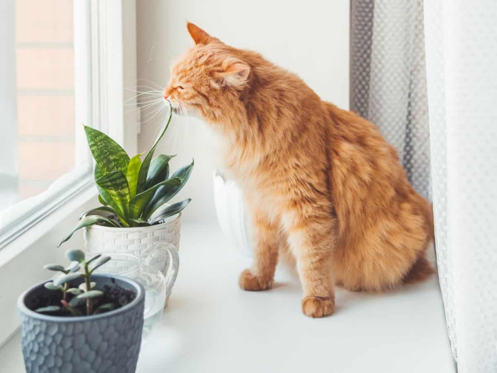
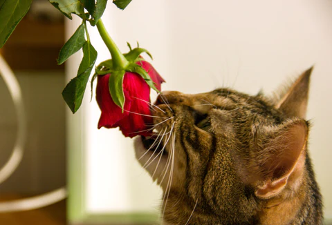
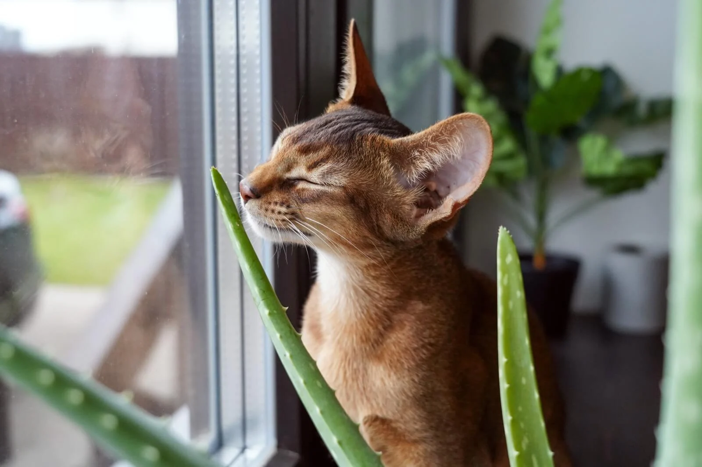
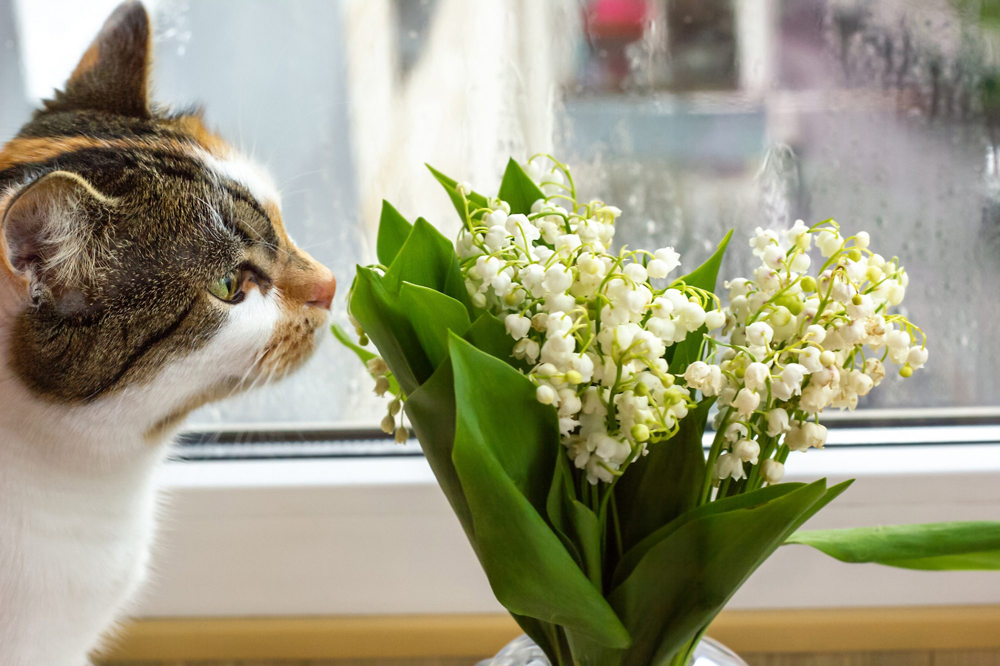
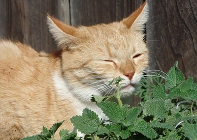
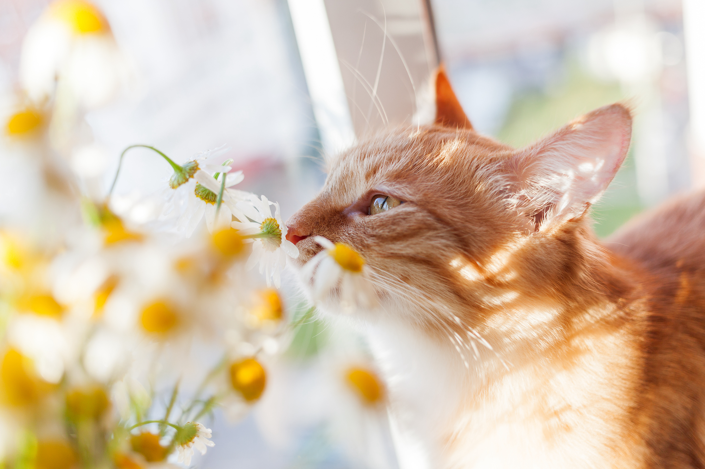
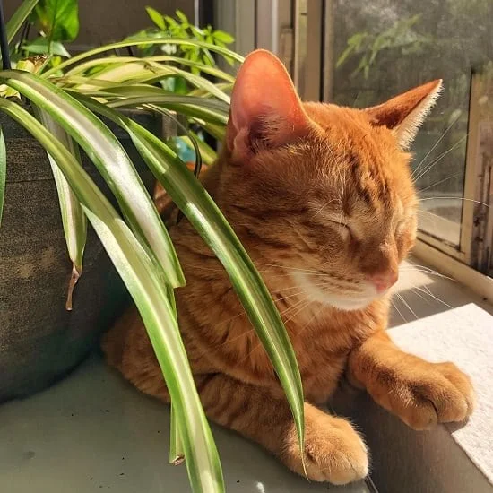
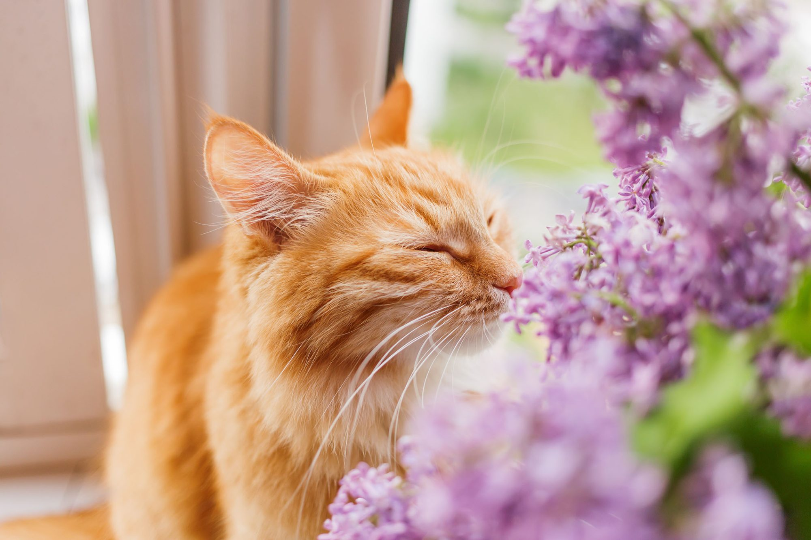
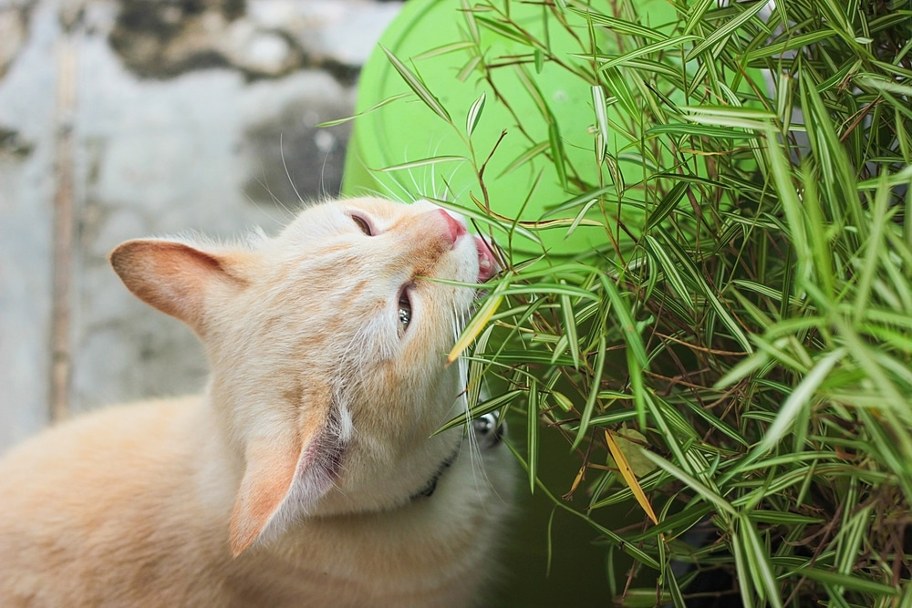

Plants
Cats are curious creatures that are constantly exploring nature. Unfortunately, there are a lot of plants that are toxic to cats. On this page, Each image contains a cat with a plant. Hover over or focus on an image to find out what the plant is and the safety info when it comes to cats.

Succulents
View safety info on "Succulents"



Lilies
View safety info on "Lilies"

Catnip
View safety info on "Catnip"

Daisies
View safety info on "Daisies"

Spider Plant
View safety info on "Spider Plants"

Lilacs
View safety info on "Lilacs"
